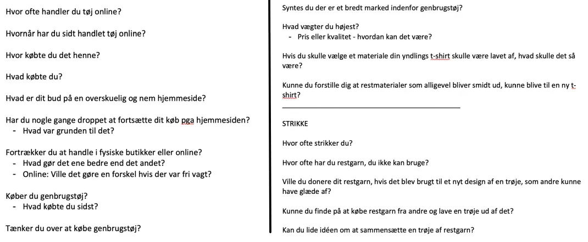

UX
I tema 3 fik vi til opgave at “Design en webshop, der sælger t-shirts”. Fokus for arbejdet i dette tema var brugergrænsefladen og brugeroplevelsen, som består af design af UI og UX ellementer til webshoppen og designe en god brugeroplevelse. Dermed skal webshoppen være bygget på et unikt salgsargument. Vi skulle udarbejde et koncept, ved hjælp af en brainstorm og mine første tanker om afsender, målgruppe, produkter og USP (Unique Selling Points). Ved hjælp af desk research fandt jeg relevante websites, analyser, artikler og blogs mv. indenfor e-handel med fokus på t-shirt makedet generelt. Vi arbejde også med survey og interviewteknikker indenfor målgruppen. Ud fra alt min viden udarbejde jeg et prototype i Adope XD, med en grundlæggende struktur og navigation. Sidste step i processen var at skrive en copy, micro copy og en tagline der afspejler min USP. Og til sidst udarbejde en færdig prototype.
Desk research
Her ses et mindmap med områder jeg ville undersøge i mit desk research, jeg havde forkus på e-handel af t-shirts, herunder afsender, målgruppe, produkter og USP. Ud fra min research lavede jeg liste over konkurrenter og sider der kunne inspirerer mig, dermed fandt jeg ud af at der ikke er mange konkurrenter indenfor genanvendeligt garn, og det primært er unge som handler online.

Læs konceptet herunder
Koncept


Survey og interview
Jeg vil undersøge hvor ofte folk handler tøj på nettet, og hvad deres oplevelse er. Derudover undersøger jeg interessen omkring genbrug og materialer.
Survey
Jeg fik både af- og bekræftet nogle ideer og problemstillinger, som jeg tager videre i min søgning. Jeg kunne godt have formuleret nogle spørgsmål bedre eller givet folk mulighed for at uddybe deres svar til nogle af spørgsmålene.


Interview
Jeg fandt blandt andet ud af at min målgruppe nok forholdte sig mere til det yngre målgruppe, da det er lidt mere "omstændigt" koncept. Og når det omhandler at skulle donere noget, vil man gerne have noget ud af det i form af at det går til et godt formål eller en byttehandel

Sketch
I min første sketch face, gør jeg mine første tanker omkring at omsætte mit koncept til en håndgribelig webshop. Jeg startede med at lave en lightning demo, hvor jeg lavede en liste over produkter der kan være inspirerende, jeg udvalgte to websites som hedder "petit knit" og "jarnjunkies" der gav inspiration til min kurv, farver og menu. Herefter startede min sketch fase, hvor jeg gerne ville have dropdown menuer, en hover funktion med et filter på billederne og en oversigt når man tilføjer noget til kurven. I min crazy 8's lavede jeg 8 forskllige eksempler på hvordan produkt-siden skulle se ud, og jeg gik med nr. 4 øverst.
Solution Sketch
Her ses min "solution sketch" hvor jeg viser hvad jeg valgte at gå med til min webshop. På første billedet er en sketch over hvordan min forside skal opstilles og agere. På næste billede er opstillingen af produkterne og hvordan oversigten kommer frem når man tilføjer til kurven. På sidste billedet er første udkast til check out processen.


Moodboard

Copy og micro copy
Copywriting
Jeg lavede en liste med produktegenskaber og oversatte dem til fordele for kunderne. Så udvaglte jeg nogle keywords og lavede kategorioverskfiter.
Microcopy
Med min microcopy guider jeg brugeren og hjælper dem med at
integrere med produktet/hjemmesiden, herefter har jeg tilføjet
en kort beskrivende tekst for at uddybe min USP.
“Har du garn som ikke skal gå til spilde, kan du sende det ind
og vi bliver vilde”
Hos os får du mulighed for at sætte dit eget præg på en unik
trøje som kun du bliver ejer af. Scrool ned og tjek det ud!
Styletile
Ud fra Adope XD's Wires - UI Kit, lavede jeg en styletile med de kits jeg gerne ville bruge på min webshop. Den brugte jeg meget som inspiration til design og brugeroplevelsen.